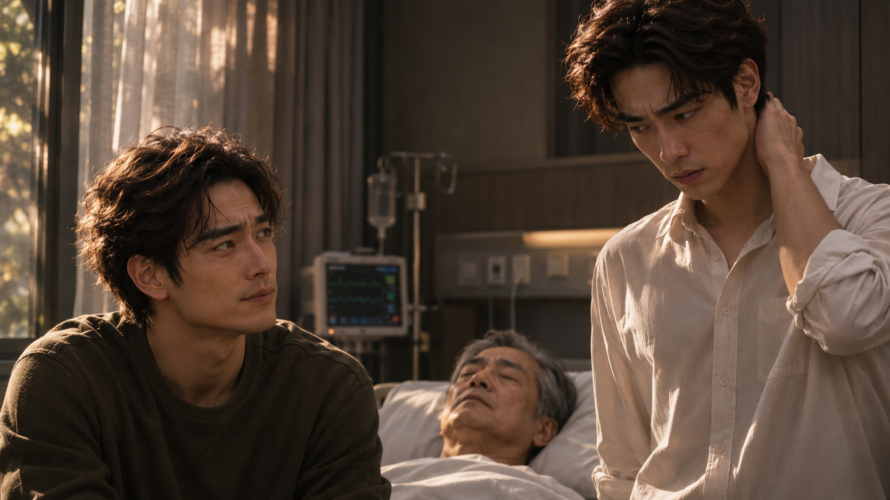
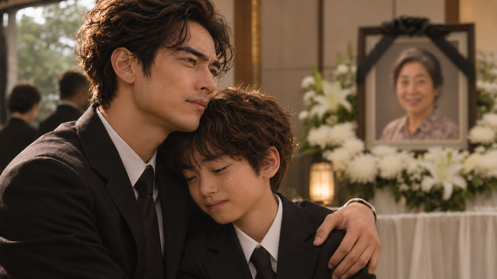
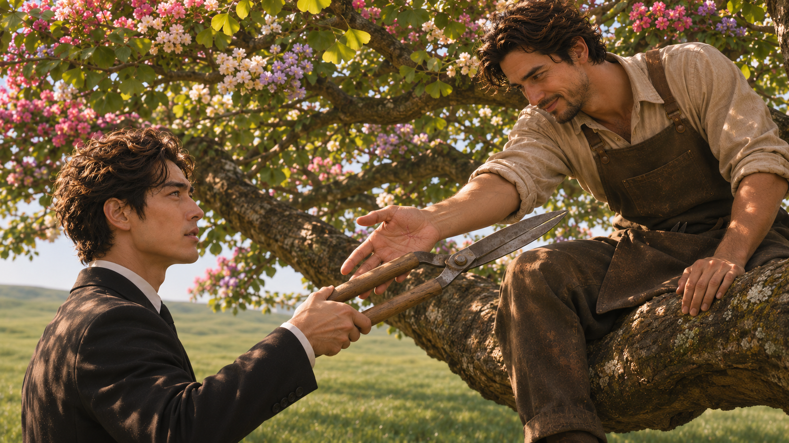
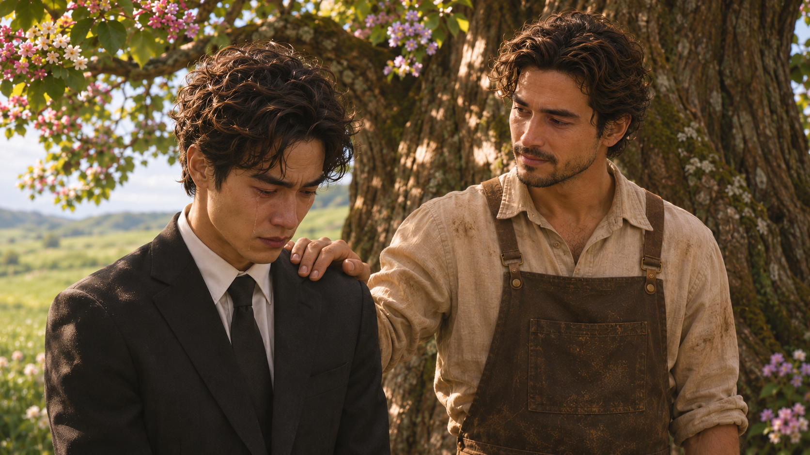
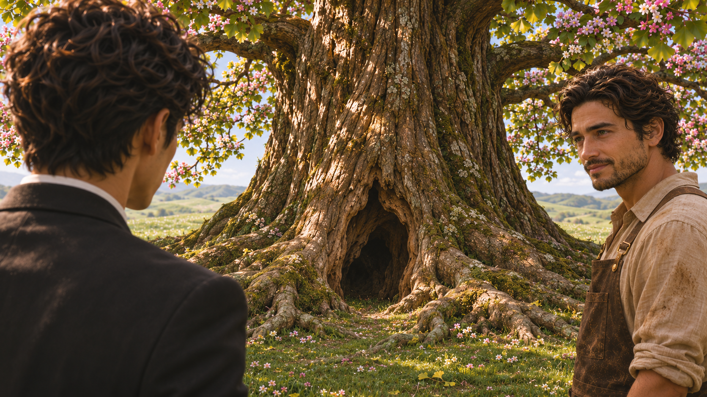

WHITE MAGIC ART STUDIO
第二十五章
園丁
茂陽醫院
午後的陽光穿過病房的窗簾，在潔白的床單上留下幾道柔和的光影。
心電監測儀規律地發出細微聲響。
梁晉輝安靜地躺在病床上，胸口隨著呼吸平穩起伏。經過神癒花的治療，他的生命徵象已經恢復正常，只是身體仍需要時間休養。
病床兩側，梁景皓與梁景毅靜靜守著。
景皓望著父親熟睡的臉，將那天在戰場上看見的記憶，一點一滴告訴弟弟。
關於母親。
關於父親多年來的隱忍。
還有那些他們曾經以為是冷漠、如今才明白的選擇。
景毅聽著，始終沒有插話。
直到哥哥說完，他才緩緩低下頭。
「結果到頭來……真正的英雄，其實是媽媽，還有爸。」
他的目光停留在父親身上。
「我們好像……真的誤會他太久了。」
景皓沒有立刻回答。
他伸手替父親拉好滑落的被角，動作很輕。
「嗯。」
兩人沉默了一會兒。
景毅忽然想起什麼，轉頭看向哥哥。
「不過說真的，爸的忘憂木竟然會開花……這件事到現在還是很不可思議。」
「我也是第一次看到。」
「而且你碰到那些花以後，竟然能跟爸一樣看見別人的記憶。」景毅皺起眉頭，「更別說後來那三朵神癒花了。」
他看著景皓，欲言又止。
「哥，那是不是代表……」
「我不知道。」
景皓輕輕搖頭。
「那一刻發生得太突然了。連我自己都還沒弄清楚。」
他望向病床上的父親，嘴角浮起一絲疲憊的笑。
「但至少……爸還在這裡。」
景毅順著他的目光看去。
「也是。」
他彎下腰，從床邊櫃子取出一只木盒。
盒蓋打開，裡面靜靜躺著兩朵銀白色的神癒花。半透明的花瓣透著微光，花心細緻的金色紋路仍清晰可見。
「而且我們現在又有兩朵了。」
景毅輕輕笑了一聲。
「好像一切又回到原點了。」
景皓看著那兩朵花。
「可是後來，我就再也召不出來了。」
他伸出手，指尖輕輕碰了碰木盒邊緣。
「也許……原本那三朵花，本來就不是為了讓我們留著的。」
景毅抬眼看他。
景皓的目光回到父親身上。
「至少這一次，我們終於也能為爸做點什麼了。」
景毅沒有接話，只是將木盒重新蓋好，放回床邊。
過了一會兒，他忽然開口。
「哥。」
「嗯？」
「回來住吧。」
景皓微微一怔。
景毅看著他，這次沒有閃躲。
「把昱鎧也接回來。」
景皓愣了幾秒，隨後低下頭。
「可是……我不知道爸會不會接受昱鎧。」
「你在開玩笑嗎？」
景毅忍不住笑了。
「如果這個家唯一恨過你的人，都已經喜歡上昱鎧了，還有誰會不接受他？」
「話是這樣說……」
「而且你也知道，事情還沒結束。」
景毅的神情逐漸認真起來。
「魔君不可能就這樣收手。狂魔症的真相還沒查清楚，建霖也說過，那個始終沒有現身的魔皇，很可能早就在暗中行動。」
他停頓片刻。
「現在的台灣，需要聖術師們團結起來。」
景皓靜靜聽著。
「也需要木翼。」
聽見最後兩個字，景皓的眼神微微一動。
景毅察覺了，卻沒有改口。
「但就算先不說這些……」
他的聲音放輕了一些。
「這個家也需要你。」
景皓抬起頭。
景毅望著哥哥，似乎還有些不習慣如此坦白。
他別開視線，伸手摸了摸後頸。

「我……也需要你。」
病房裡安靜下來。
景皓看著眼前的弟弟。
十年前，他離開這個家時，從來沒有想過，有一天會親耳聽見景毅對他說這句話。
他張了張嘴，卻發現自己一時說不出什麼。
最後，只是輕輕點頭。
「嗯。」
景毅看了他一眼。
「嗯是什麼意思？」
景皓笑了。
「別逼我說出來。」
景毅也笑了。
他重新坐回椅子上，像是終於想起另一件重要的事。
「對了，景瑜那邊，我來想辦法說服她回國。」
「說服？」景皓有些意外，「她不是還有任務嗎？」
景毅挑起眉毛。
「看來她對我們兩個，都各自隱瞞了不同事情。」
「什麼意思？」
「她瞞著我，你跟昱鎧的事。」
景皓沉默了一下。
「……然後瞞著你，她一直不肯回台灣的真正原因。」
兩兄弟對望一眼。
景毅輕輕嘆了口氣。
「我們這一家人，還真有夠麻煩的。」
景皓失笑。
「這不是你第一次說了。」
「因為真的很麻煩啊。」
景毅靠回椅背，望向窗外。
「每個人都覺得自己在做對的事，結果誰都不肯把話說清楚。」
他頓了頓。
「但……我想我們也只是用各自的方式，在消化這個家的悲傷吧。」
景皓沒有回答。
窗外的風吹動樹梢，細碎的陽光在病床邊輕輕搖晃。
「不過，」景毅轉回頭，看了看熟睡的父親，又看向哥哥，「拉比最後還是讓這個家，有了新的曙光。」
景皓的笑容漸漸淡了下來。
他垂下眼，若有所思。
「拉比……嗎？」
那個名字，他已經很久沒有這樣認真地想起了。
一週後
碧雲姐的喪禮，在一個陰晴交錯的上午舉行。
靈堂布置得莊嚴而樸素。白色花卉環繞著遺照，空氣中瀰漫著淡淡的香火味。
前來弔唁的親友不少。
有人低聲交談，有人望著照片出神，也有人在儀式進行時悄悄擦去眼淚。
景皓與昱鎧穿著整齊的黑色正裝，站在人群稍後的位置。
他們沒有參與祭拜的儀式，卻始終安靜地陪伴，向碧雲姐表達最後的敬意。
昱鎧緊緊牽著父親的手。
他的眼睛一直望著前方那張熟悉的照片。
照片裡的碧雲姐笑得很開心。
就像以前每次看見他回家時一樣。
「爸爸……」
「嗯？」
「她真的不會再回來了嗎？」
景皓低頭看著兒子。
他蹲下身，輕輕整理昱鎧有些歪掉的衣領。
「嗯。」
昱鎧低下頭，沒有再問。
景皓將他的手握得更緊了一些。
儀式結束後，一位年長的婦人走了過來。
她看著景皓，神情溫和。
「你就是景皓吧？」
「是，您好。」
「我是碧雲的姊姊。」
景皓連忙微微欠身。
婦人望著他，眼眶泛起一點紅。
「碧雲以前常常提起你們父子。」
她看了看昱鎧。
「她總說，雖然自己沒有孩子，可是有你們陪著，她就覺得自己也有了一個家。」
景皓喉頭微微一緊。
婦人笑了笑。
「你們今天能來送她，她一定很欣慰。」
「謝謝您。」
景皓低聲回答。
他望向那張遺照。
「其實……一直以來，都是她在照顧我們。」
他停了一下。
「對我們來說，她早就是家人了。」
婦人輕輕點頭，伸手摸了摸昱鎧的頭。
「孩子，碧雲在天之靈，一定也會保佑你的。」
昱鎧抬起頭，努力擠出一個笑容。
「謝謝婆婆。」
然而話才說完，眼淚便從他的臉頰滑了下來。
景皓伸手替他擦去淚水，隨後將孩子輕輕攬進懷裡。
這一次，他沒有急著安慰。
只是陪著昱鎧，安靜地站了一會兒。

喪禮結束後，父子倆沿著附近的街道慢慢走著。
老街兩旁的房屋有些年歲了，騎樓下擺著盆栽，偶爾有機車從身旁經過。
景皓牽著昱鎧的手，刻意放慢腳步。
「對了，搬回我老家以後，睡得還習慣嗎？」
昱鎧想了想。
「還好。」
「只有還好喔？你現在可是有自己的房間欸。」
「可是棉被刺刺的。」
景皓轉頭看他。
「刺刺的？」
「嗯，我比較喜歡以前那件。」
「真的假的？」景皓一臉不可置信，「你現在蓋的那件比以前貴很多欸！」
昱鎧聳聳肩。
「可是以前的比較舒服啊。」
景皓看著兒子，忽然露出壞笑。
「還是其實……你沒有爸爸陪你睡，不習慣啊？」
「才沒有！」
昱鎧立刻反駁，耳朵卻有些紅了。
景皓笑出聲。
「好啦，好啦。那我回去幫你換棉被。」
「嗯！」
兩人繼續往前走。
午後的陽光從屋簷間落下，照亮了街道上細小的塵埃。
過了一會兒，昱鎧忽然抬頭。
「爸。」
「怎麼啦？」
「碧雲阿姨……會遇到拉比嗎？」
景皓的腳步慢了下來。
他低頭看著兒子。
「嗯……這個我也不知道。」
昱鎧似乎有點失望。
景皓想了想，又笑著說：
「不過，我覺得拉比是個很喜歡交朋友的人。」
「真的嗎？」
「真的啊。」
景皓望向前方。
「如果祂遇見碧雲姐，我想……祂一定會很開心認識她。」
昱鎧想了一會兒。
「那你跟拉比是好朋友囉？」
景皓微微一怔。
「好朋友……」
他輕輕笑了。
「嗯。是啊。」
只是這個答案說出口時，他心裡卻浮現一絲說不清的感覺。
有多久了呢？
他已經有多久，沒有像以前那樣與拉比說話了？
「昱鎧。」
「嗯？」
「我以前是不是跟你說過，家人比什麼都重要？」
「有啊。」
「可是你知道嗎……」
景皓看著兒子。
「如果沒有拉比，我們可能根本不會有機會成為一家人。」
昱鎧眨了眨眼。
「這我當然知道啊。」
「喔？」景皓有些意外，「你知道？」
「對啊。如果沒有祂，我可能也不會遇見你了。」
景皓愣了一下，隨即笑出聲。
「哇，誰教你這種話的？這麼成熟。」
「這還需要人教喔？」
昱鎧露出一副理所當然的表情。
「用想的就知道啦！拉比可是擁有六大聖術的聖術師耶！」
他一邊說，一邊伸出手指比畫。
「那麼厲害的人，一定也有辦法讓每個人都擁有最完美的家人吧！」
景皓聽了，心裡忽然一動。
「最完美的家人……？」
「對啊。」
景皓看著兒子，語氣不自覺地放柔。
「可是……你沒有媽媽耶。」
昱鎧停下腳步，轉頭看他。
那雙眼睛裡沒有遺憾，也沒有委屈。
「但我有你啊！」
景皓怔住。
昱鎧笑得燦爛。
「這樣就很好了啊！」
街道上的聲音彷彿在那一瞬間變得遙遠。
景皓望著兒子。
過了一會兒，他伸手揉亂昱鎧的頭髮。
「你這小子……」
他笑了，卻沒有立刻移開目光。
「突然講這麼好聽的話，是不是又想買新漫畫了？」
「我可沒說喔！」
昱鎧立刻露出狡黠的笑容。
「可是你自己都提到了……那就順便嘛！」
「欸，你這樣很心機耶！」
「誰叫你先講的！」
昱鎧笑著往前跑了幾步。
「喂！」
景皓正要追上去。
然而，就在他跨出腳步的瞬間——
風停了。
街道上的聲音消失了。
景皓微微一怔。
眼前的老屋、騎樓與行人，不知何時已經不見。
取而代之的，是一片無邊無際的草原。
柔軟的青草隨風起伏，遠方的天空澄澈得不可思議。
「……昱鎧？」
景皓下意識地回頭。
兒子不見了。
奇怪的是，他心裡竟沒有半點恐懼。
反而有一種久違的平靜，緩緩湧上心頭。
彷彿這裡的一切，都曾經與他如此熟悉。
遠方，一棵巨大的樹木矗立在草原中央。
樹冠茂盛，枝頭開滿五彩繽紛的花朵，在陽光下輕輕搖曳。
景皓望著那棵樹，不自覺地向前走了一步。
就在這時——
「你知道嗎？」
一道熟悉的聲音，忽然從樹上傳來。
「你兒子剛剛說的那番話，力量大得都能把山挪開了。」
景皓停住腳步。
他緩緩抬起頭。
樹枝間，一名穿著園丁服的男子正專心修剪花木。
男子似乎早就知道他會來。
卻沒有急著轉過身。
只是帶著笑意，又剪下了一截多餘的枝條。
景皓站在草地上，久久沒有動作。
那個聲音……
他已經有多久，沒有親耳聽見了？
樹上的男子仍專心修剪著枝葉，似乎完全不在意景皓此刻有多麼驚訝。
「景皓！」
男子忽然探出頭，朝他招了招手。
「幫我拿一下大剪刀好嗎？就在你腳邊！」
「……喔，好。」
景皓下意識地低頭。
腳邊果然放著一把園藝用的大剪刀。
他彎腰拾起，走到樹下，將剪刀遞了上去。
男子伸手接過。
就在那一瞬間，景皓看見了祂掌心的釘痕。
熟悉得讓人心頭一緊。

「謝啦！」
男子笑著接過剪刀，隨手將它掛在腰間。
祂看起來與景皓年紀相仿，棕色短髮，留著修整整齊的短絡腮鬍，膚色略深，五官帶著中東人的輪廓。
一身樸素的園丁服，袖口還沾著些許泥土。
沒有華麗的衣袍，也沒有令人難以直視的光芒。
就像一位正在享受午後時光的普通園丁。
可是景皓知道。
眼前這個人，正是傳說中的聖術師——拉比。
「老師……」
他終於開口，聲音卻比自己想像中還要輕。
拉比低頭看了他一眼。
「嗯？」
「那個……」
「有一段時間了吧？」
景皓愣了一下。
「您是說……？」
「我們上次這樣聊天，是什麼時候的事了？」
拉比一邊說，一邊剪去一根長得過於突出的枝條。
「自從你上大學以後，我們好像就很少聊天了。」
景皓垂下眼。
「……嗯。」
「不過，嚴格來說，你後來還是有主動找過我。」
拉比想了想。
「那一次，是為了昱鎧生病的事，對吧？」
景皓微微一怔。
他當然記得。
一個月前，昱鎧得了重病。他翻遍了自己知道的木之聖術，卻始終沒有把握。
最後，他只能像從前一樣，向拉比尋求幫助，
「……對。」
景皓低聲回答。
拉比笑了笑。
「不過，比起那次，我倒是更常想起你高中的時候。」
「高中？」
「對啊。」
拉比放下手中的枝條，望向遠處的草原。
「那時候，我們不是常常在你家後院聊天嗎？」
景皓抬起頭。
「你每次都很興奮地帶我去看你新種的花。」
拉比模仿起少年時的語氣。
「『你看這朵！這個品種很少見喔！』」
景皓忍不住笑了。
「我哪有那麼誇張！」
「有啊。」
拉比笑得很開心。
「而且你還會跟我解釋，每一種花適合什麼土壤、需要多少陽光。有時候一講就是一整個下午。」
「……好像真的有。」
「我記得，你還說過，希望自己能像花一樣。」
景皓的笑容慢慢安靜下來。
拉比望著他。
「有很多不同的樣貌，可以按照自己的方式生長，而不是只能成為你父親期待的樣子。」
景皓怔住。
那是很久以前的事了。
久到連他自己，都快忘記曾經說過這些話。
「您竟然還記得……」
「當然記得。」
拉比回答得理所當然。
景皓低下頭，嘴角浮起一絲懷念的笑。
「我也記得。」
他抬眼望向樹上的男子。
「那時候我根本不知道您是誰，更不知道那些花原來都是您創造的。」
他有些不好意思地笑了。
「還在您面前自以為很懂植物。」
「你本來就很懂啊。」
「哪有……」
「真的。」
拉比笑著說。
「我很喜歡聽你介紹那些花。」
景皓望著祂，心裡忽然湧上一股久違的溫暖。
「我記得……也是那段時間，您讓我元素使的天賦覺醒了。」
「嗯，你的『花語』。」
拉比輕輕點頭。
「我特別喜歡你的元素使天賦。」
一陣微風吹過。
樹上的花朵輕輕搖晃，幾片花瓣緩緩落在景皓腳邊。
他望著那些花瓣，猶豫了片刻。
「可是老師……」
「嗯？」
「您後來就很少出現了。」
拉比沒有立刻回答。
景皓輕輕抿起嘴。
「所以我……」
「所以你就不太願意再跟我聊天了？」
拉比的語氣沒有責備，反而帶著一點熟悉的笑意。
「可是景皓，你知道的，就算我沒有現身，你還是可以跟我說話啊。」
景皓沉默了一會兒。
「……我知道。」
他望著腳下的青草。
「不然，我也不會知道只有神癒花能救昱鎧。」
「嗯。」
拉比將剪下的枝葉收進竹籃。
過了一會兒，祂忽然問：
「所以，你其實是不太想見到我，對嗎？」
景皓的心微微一沉。
他抬頭看向拉比，卻又很快避開了視線。
「老師……」
「我在聽。」
景皓深吸一口氣。
有些話，他已經放在心裡太久了。
「我一直有件事想問您。」
拉比停下手中的工作。
「你說。」
景皓抬起頭。
「為什麼……我還能見到您？」
拉比沒有說話。
「還有，為什麼我還能召出神癒花？」
景皓的聲音漸漸顫抖。
「您不是……已經把我體內的木翼收回去了嗎？」
拉比眨了眨眼。
「沒有啊。」
「……什麼？」
景皓愣住。
拉比的神情十分自然，彷彿剛才只是回答了一個再普通不過的問題。
「我沒有收回你的木翼。」
「可是……」
景皓向前走了一步。
「那天晚上，我明明親口請求您，讓我不再當翼聖術師！」
他越說越急。
「而且您真的出現了！我看見您坐在我旁邊！」
「嗯，我記得。」
「那您也應該記得，我當時感覺到有一股力量從身體裡被抽走！」
景皓緊緊握住拳頭。
「那種感覺……我不可能記錯。」
拉比靜靜望著他。
片刻後，祂將手中的剪刀放進竹籃，從樹枝上輕巧地爬了下來。
「景皓。」
祂站穩腳步，拍去衣襬上的木屑。
「那天晚上，你呼喚了我。」
景皓沒有回答。
「所以，我來了。」
拉比走近他，語氣依舊平靜。
「至於你感覺到的那股力量……」
祂停了一下。
「那是因為你當時已經不願意接受自己了。」
景皓微微皺眉。
「……什麼意思？」
「你不想使用那份力量，也不願意承認自己是木翼。」
拉比看著他。
「你把那個身分，和所有讓你痛苦的事情綁在一起。你覺得只要放下它，就能不必再面對那些事。」
景皓的呼吸漸漸急促。
「可是……」
「景皓。」
拉比輕聲打斷他。
「我沒有把你的木翼拿走。」
祂的眼神溫柔得讓人無法逃避。
「那天晚上，我什麼都沒有做。」
景皓怔怔地看著祂。
拉比微微一笑。
「我只是坐在你身邊，陪著你度過那個夜晚。」
風輕輕吹過草原。
景皓的嘴唇動了動，卻沒有發出聲音。
那一晚的記憶，忽然變得清晰起來。
他記得自己坐在黑暗裡。
記得那種幾乎讓人喘不過氣的痛苦。
也記得拉比出現在身旁時，什麼都沒有說。
祂只是安靜地陪著他。
原來……
那不是告別。
「所以……」
景皓艱難地開口。
「我從頭到尾……都還是木翼？」
拉比沒有直接回答。
只是溫和地看著他。
景皓低下頭，往後退了半步。
「可是……不行啊。」
拉比微微歪頭。
「什麼不行？」
「我不能……」
景皓的聲音開始發抖。
「我不能是木翼。」
「為什麼？」
拉比向前走了一步。
「景皓，你討厭我嗎？」
「不！」
景皓幾乎立刻回答。
他用力搖頭。
「老師，我怎麼可能討厭您……」
「那為什麼不願意接受自己是木翼？」
景皓沒有回答。
拉比望著他，神情逐漸認真起來。
「你知道木翼代表什麼，對吧？」
「……知道。」
「那為什麼，要一直否認我放在你生命裡的那一部分？」
景皓緊緊咬住牙關。
他想回答。
卻發現那些多年來反覆在心中出現的理由，一旦真的要對拉比說出口，竟然如此困難。
拉比沒有催促他。
只是安靜地等著。
終於——
「因為我不配！」
景皓幾乎是吼出來的。
聲音在空曠的草原上傳開。
拉比沒有退開，也沒有露出驚訝的表情。
景皓低著頭，雙肩微微顫抖。
「老師……您知道嗎？」
他苦笑了一聲。
「如果我承認自己是木翼……」
他的聲音越來越低。
「那我就得承認，一個像我這樣的人，竟然還擁有您最神聖的力量。」
拉比靜靜聽著。
「一個……在沒有祝福的關係裡，讓女人懷孕的人。」
景皓的手指緊緊攥住衣角。
「一個曾經想用您賜予我們的聖術，殺死自己父親的人。」
他的眼眶漸漸泛紅。
「一個明明知道那是禁術，卻還是選擇去做的人……」
他停住了。
胸口像是被什麼緊緊壓住。
「還有……」
景皓抬起頭。
眼淚終於從眼眶滑落。
「一個連自己媽媽都救不了的聖術師。」
他努力吸了一口氣，卻怎麼也止不住顫抖。
「我明明有木之聖術……」
「明明有那麼多能力……」
「可是媽媽最需要我的時候，我卻什麼都做不到……」
他用手摀住臉。
多年來壓在心底的痛苦，終於在這一刻潰堤。
「我甚至還把所有事情都怪在爸身上……」
「我恨他……恨了那麼多年……」
景皓緩緩放下手，淚水模糊了視線。
「可是到最後，我才知道他為我們做了多少事。」
他望著拉比，聲音破碎。
「老師……」
「這樣的人……」
「怎麼還能擁有您的翼？」
他低下頭。
「我真的……不配啊……」
拉比沒有立刻回答。
祂只是望著景皓。
那雙眼睛裡沒有憤怒，也沒有失望。
只有深深的憐惜。
過了許久，拉比才緩緩走到他身旁。
祂沒有急著替景皓擦去眼淚，也沒有要求他停止哭泣。
只是輕輕將手放在他的肩上。

「景皓。」
景皓抬起泛紅的眼睛。
拉比朝那棵巨大的樹望去。
「你覺得這棵樹，怎麼樣？」
景皓愣住。
「……樹？」
「嗯。」
拉比微微一笑。
「這可是我最喜歡的樹之一。」
景皓順著祂的目光看去。
那棵樹高大而壯碩，枝葉繁盛，五彩繽紛的花朵點綴其間。
陽光從樹冠的縫隙灑落，在草地上形成細碎的光斑。
景皓抹去臉上的淚水，努力平復呼吸。
「很漂亮……」
他輕聲回答。
「真的很漂亮。」
拉比看著他。
「是嗎？」
「嗯。」
景皓點點頭。
「長得這麼高大，還能開出這麼多不同的花……」
他勉強露出一點笑容。
「也是您種的嗎？」
拉比搖了搖頭。
「不是。」
景皓有些意外。
「那是……？」
拉比望著他，眼裡帶著溫柔的笑意。
「是你種的。」
「……我？」
景皓怔住。
「不可能啊，我根本不記得……」
「也許，」
拉比輕輕扶住他的肩，帶著他往旁邊走了幾步。
「換個角度看看？」
景皓順著祂指引的方向，再次望向那棵樹。
原本被繁花遮掩的樹幹，漸漸顯露出熟悉的輪廓。
粗壯的枝條。
樹皮上的紋理。
還有樹根附近，那個被歲月掩藏的樹洞。
景皓的呼吸忽然停了一拍。

「等一下……」
他向前走了幾步。
「這棵樹……」
一段久遠的記憶，猛然浮上心頭。
「銀杏樹……」
景皓瞪大眼睛。
他緩緩回頭，看向拉比。
「這裡……」
「這裡是昱鎧誕生的地方！」
拉比輕輕點頭。
祂望著那棵銀杏樹，神情依舊溫柔。
「景皓。」
「嗯……？」
「你一直記得那一天發生了什麼。」
拉比轉頭看向他。
「可是，有些事情，是當時的你沒有看見的。」
景皓怔怔地望著祂。
拉比的虹膜漸漸泛起細緻的翠綠色光芒。
「這一次……」
祂輕聲說道。
「讓我借用你父親的木瞳術，陪你重新看看那一天，好嗎？」
景皓望著祂，慢慢點了點頭。
「……恩。」
拉比伸出手，輕輕碰了碰景皓的額頭。
下一瞬間——
草原上的風聲漸漸遠去。
眼前的光影開始變化。
那棵開滿繁花的銀杏樹，也慢慢褪去了如今的模樣。
時間彷彿沿著樹幹的年輪，一圈一圈，向著過去退去。
而景皓即將看見的，是一段連他自己都不曾知道的往事。